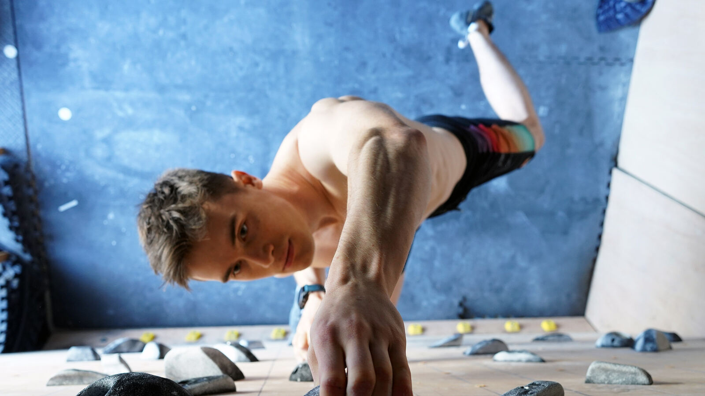

12 weeksBeginner → intermediateTrain anywhere
Boot Camp
Builds a strong athletic foundation for climbing, covering strength, power, stamina and movement technique, using high-intensity and multi-directional speed and agility training.